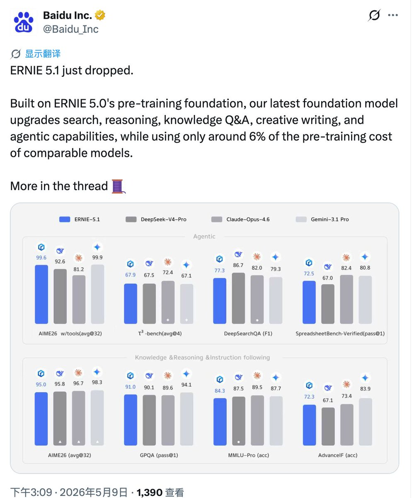

孙悟元 ヾ(≧▽≦*)o 喵！
@wuyuandev
@manateelazycat 这篇吐槽百度的贴都10万阅读了。。。

Andy Stewart
@manateelazycat
百度推出文心一言 5.1 了
看它自己晒的分数，在很多方面甚至强于 Claude Opus 4.6 和 DeepSeek V4 Pro，等着看实测如何了
就是给人感觉很太心酸，没什么人关注啊
发布快1个小时了才1000多阅读🥲 https://t.co/N51jnTkiqI